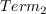
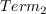
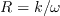
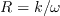
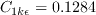
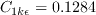

|
Langley Research CenterTurbulence Modeling Resource |
One-Equation Wray-Agarwal Algebraic Transitional Model
This web page gives detailed information
on the equations for the
WA-AT transitional turbulence model.
This model is a linear eddy viscosity model.
Linear models use the Boussinesq assumption for the constitutive relation:
Unless otherwise stated, for compressible flow with heat transfer this model is implemented as described on the page
Implementing Turbulence Models into the Compressible RANS Equations, with perfect gas
assumed and Pr = 0.72, Prt = 0.90, and Sutherland's law for dynamic viscosity.
Return to: Turbulence Modeling Resource Home Page One-Equation Wray-Agarwal Algebraic Transitional Model
(WA-AT)
This transition model is based on the
WA-2018 one-equation model.
Without any modification, WA-2018 alone cannot predict transition from laminar flow to turbulent flow.
Following the work of the
SA-BCM model by Cakmakcioglu et al,
the WA-2018 turbulence model is coupled with an algebraic turbulence intermittency
The reference is:
The baseline WA-2018 model is modified to include the
The value of
The intermittency term
is given by:
The
The damping function is designed to account for wall blocking effect. It is given by:
This model combines the features of standard
The model constants are the same as in WA-2018:
Boundary conditions at solid smooth walls are:
and for the freestream, the authors recommend:
Return to: Turbulence Modeling Resource Home Page Ramesh Agarwal and his students Y. Xue and T. Wen are acknowledged for helping with this webpage.
Recent significant updates: Responsible NASA Official:
Ethan Vogel

 equation to provide the capability to predict transition. (However, note that there are
differences in some of the calibrated terms between SA-BCM and WA-AT.)
equation to provide the capability to predict transition. (However, note that there are
differences in some of the calibrated terms between SA-BCM and WA-AT.)
term through multiplication with the kinetic energy production term
 :
:
![\frac{\partial R}{\partial t} + \frac{\partial u_j R}{\partial x_j} = \frac{\partial}{\partial x_j}
\left[(\sigma_{{}_R} R+\nu)\frac{\partial R}{\partial x_j}\right]+C_1\gamma RS +
f_1 C_{2kw}\frac{R}{S}\frac{\partial R}{\partial x_j}\frac{\partial S}{\partial x_j}
-(1-f_1)\min\left[C_{2kw}R^2\left(\frac{\frac{\partial S}{\partial x_j}\frac{\partial S}{\partial x_j}}{S^2}\right),
C_m\frac{\partial R}{\partial x_j}\frac{\partial R}{\partial x_j}\right]](wa-at_eqns/img4.png) is 0 in laminar flow, and 1 in fully turbulent flow.
In WA-2018, the eddy viscosity is given by:
is 0 in laminar flow, and 1 in fully turbulent flow.
In WA-2018, the eddy viscosity is given by:
 is formulated as:
is formulated as:
Here

 is designated to trigger the transition location, and
 helps the intermittency to penetrate into the boundary
layer.
is given by:
is designated to trigger the transition location, and
 helps the intermittency to penetrate into the boundary
layer.
is given by:
where


and d is the wall distance. The local turbulence intensity is set to a constant value, based solely on
freestream turbulence intensity:

 and
and
 are calibrated constants given by:
are calibrated constants given by:
 and
and
 .
.
where

 is the kinematic viscosity and
.
S and W are the mean strain rate and mean vorticity, given by:
is the kinematic viscosity and
.
S and W are the mean strain rate and mean vorticity, given by:


 and
and
 models. The switching function
models. The switching function
 triggers the switch:
triggers the switch:

where


 



(The influence of
 comes in through
comes in through
 ,
and not through
,
and not through  .)
.)
none
Page Curator:
Clark Pederson
Last Updated: 01/17/2023